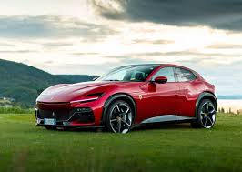

A Ferrari é uma fabricante italiana de carros esportivos de luxo com sede em Maranello. Fundada por Enzo Ferrari em 1939 na divisão de corridas da Alfa Romeo com o nome Auto Avio Costruzioni, a empresa construiu seu primeiro carro em 1940.
Unidade 499 de 499 produzidas do esportivo híbrido ostenta a cor Bianco Italia e entrega 963 cv de potência A Ferrari LaFerrari, lançada em 2013, foi o primeiro carro híbrido da marca italiana. Além desse fato histórico, o esportivo também é raro. Afinal, apenas 499 exemplares foram fabricados no mundo. E o curioso é que o último deles acaba de desembarcar justamente no Brasil.Sobre nós

Consessionária da Ferrari
Veja como encontrar uma consessionária!Modelos mais conhecidos
- Ferrari Purosangue
- Ferrari 12Cilindri
- Ferrari 296 GTB / SF290 Spider
- Ferrari Roma / Roma Spider
- Ferrari F8 Tributo \ F8 Spider

Novo Modelo - Ferrari Luce